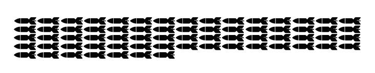
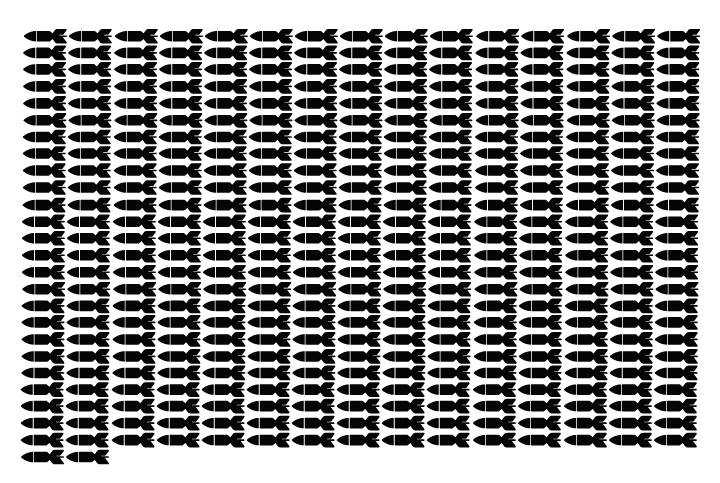

Durante 1949 el país fue afectado por 2 terremotos de gran magnitud. El primero en Angol y el segudno en Punta Arenas. Más información sobre las catástrofes en la tabla a continuación.
Lugar
Fecha
Magnitud
Muertos
Damnificados
Total Energía Liberada (Megatonelada)
Angol
19-04-1949
7,3 Richter - 10 Mercalli
35
2065
1,2
Punta Arenas
17-12-1949
7,8 Richter - 8 Mercalli
6
225
7,6
¿A qué equivale esa energía liberada? Equivale a 67 bombas de Hiroshima la de Angol, y a 377 la de Punta Arenas. O sea...

